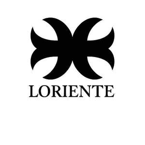

Trade Mark Journal No.2026/007 13 February 2026
UK00004331611 28 January 2026 (25)

- Class 25
- Parts of clothing, footwear and headgear; Clothing; Footwear; Knitwear [clothing]; Headbands [clothing]; Headbands for clothing; Gloves [clothing]; Gloves as clothing; Ready-to-wear clothing; Jackets [clothing]; Woolen clothing; Rainproof clothing; Leather clothing; Clothing of leather; Leather (Clothing of -); Gabardines [clothing]; Sneakers [footwear]; Visors [clothing]; Garments for protecting clothing; Jerseys [clothing]; Waterproof clothing; Clothing for leisure wear; Jackets being sports clothing; Oilskins [clothing]; Wristbands [clothing]; Knitted clothing; Chaps (clothing); Footwear [excluding orthopedic footwear]; Athletic clothing; Muffs [clothing]; Furs [clothing]; Men's clothing; Bandeaux [clothing]; Embroidered clothing; Denims [clothing]; Gloves for apparel; Shorts [clothing]; Corsets [clothing, foundation garments]; Collars [clothing]; Wooden shoes [footwear]; Water-resistant clothing; Capes (clothing); Party hats [clothing]; Clothing for sports; Sports clothing; Kerchiefs [clothing]; Cashmere clothing; Belts [clothing]; Belts for clothing; Aprons [clothing]; Weatherproof clothing; Windproof clothing; Veils [clothing]; Casual clothing; Insoles for footwear; Latex clothing; Mitts [clothing]; Flip-flops for use as footwear; Dance clothing; Playsuits [clothing]; Golf clothing, other than gloves; Footwear for snowboarding; Jackets (Stuff -) [clothing]; Stuff jackets [clothing]; Woven clothing; Shoes for leisurewear; Hoods [clothing]; Braces for clothing; Leather belts [clothing]; Casual footwear; Bottoms [clothing]; Leisure clothing; Thermal clothing; Paper hats for use as clothing items; Ready-made clothing; Clothing for cycling; Trunks being clothing; Handwarmers [clothing]; Boas [clothing]; Layettes [clothing]; Clothing layettes; Maternity clothing; Footwear for women; Footwear for men; Mufflers [clothing]; Athletic footwear; Silk clothing; Clothing of imitations of leather; Leather (Clothing of imitations of -); Linen clothing; Clothing for gymnastics; Fashion hats.
Loriente LTD